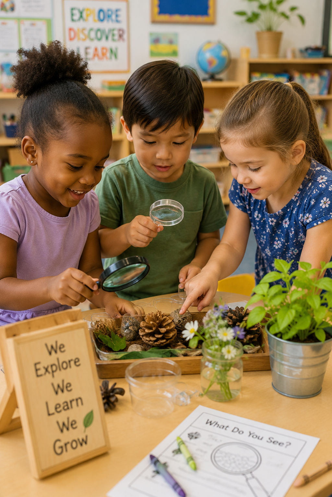
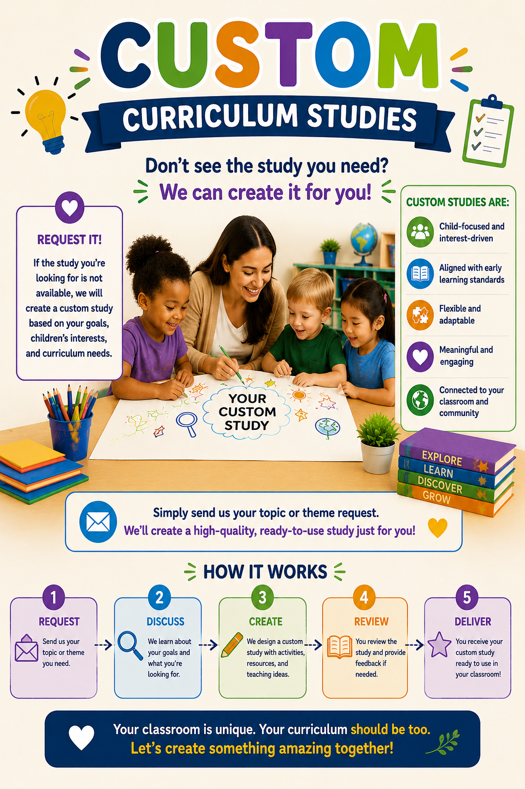

Complete Lesson Plans
Ready to use daily and weekly lesson plans with engaging activities and clear learning goals.
Discover engaging investigations thoughtfully designed for Early Head Start, Head Start, Preschool, and Pre Kindergarten classrooms. Each study encourages curiosity, creativity, collaboration, and meaningful hands on learning while supporting every area of child development.

Whether you're planning a science investigation, dramatic play experience, literacy theme, or seasonal exploration, finding the right study has never been easier.
Each curriculum study is thoughtfully designed to reduce planning time while providing engaging experiences that inspire exploration, creativity, and joyful learning.
Ready to use daily and weekly lesson plans with engaging activities and clear learning goals.
Classroom materials, journals, signs, labels, family activities, and teaching tools ready to print.
Art, STEM, literacy, dramatic play, music, movement, sensory exploration, and outdoor learning.
Activities intentionally designed to support cognitive, social, emotional, language, and physical development.
Explore one of our most popular investigations and discover how meaningful, hands on experiences can transform your classroom.

Children investigate the amazing world of trees through observation, exploration, science, literacy, art, mathematics, dramatic play, and outdoor discovery. This comprehensive study encourages curiosity while helping children build meaningful connections with the natural world.
Flexible daily learning experiences.
Art, STEM, literacy, music, sensory, and more.
Ready to print classroom materials and journals.
Activities that extend learning beyond the classroom.
Each curriculum study includes engaging lesson plans, printable resources, classroom activities, family engagement ideas, and hands on learning experiences designed specifically for early childhood classrooms.
Showing our growing collection of curriculum studies for Early Head Start, Head Start, Preschool, and Pre Kindergarten.

Investigate rolling, bouncing, speed, measurement, and motion through playful exploration and hands on discovery.
Explore Study
Observe leaves, bark, branches, roots, habitats, weather, and seasonal changes through outdoor investigations.
Explore Study
Design, compare, and build structures while encouraging creativity, teamwork, and problem solving.
Explore Study
Discover clothing, weather, occupations, seasons, fabrics, and cultures through meaningful experiences.
Explore Study
Learn how to care for animals while building empathy, responsibility, language, and science skills.
Explore Study
Investigate floating, sinking, freezing, melting, pouring, and the amazing properties of water.
Explore Study
Discover how wheels help people and objects move while exploring motion, transportation, engineering, and problem solving.
Explore Study
Plant seeds, observe growth, care for living things, and discover how gardens change throughout the seasons.
Explore Study
Transform ordinary cardboard boxes into creative structures while exploring design, construction, imagination, and teamwork.
Explore Study
Mix, measure, knead, bake, and discover how bread is made while learning about nutrition and cultures around the world.
Explore Study
Explore symbols, letters, colors, maps, and community signs while strengthening literacy and communication skills.
Explore Study
Push, pull, lift, roll, and investigate how simple machines help people solve everyday problems.
Explore Study
Dig, sift, pour, measure, and build while exploring texture, science, mathematics, and imaginative play.
Explore Study
Design pathways, tunnels, ramps, and marble runs while encouraging creativity, engineering, and problem solving.
Explore Study
Help children care for the Earth by exploring recycling, conservation, and creative ways to reuse everyday materials.
Explore Study
Move, stretch, jump, balance, and discover why physical activity helps us stay healthy, strong, and active every day.
Explore Study
Every classroom is unique, and sometimes you need a study designed specifically for your children, interests, or program goals. We create custom curriculum studies that are engaging, developmentally appropriate, and ready for the classroom.
Whether you're looking for a brand new investigation, seasonal theme, dramatic play center, printable resource, or complete lesson plan collection, we'd love to help bring your ideas to life.
Complete Curriculum Studies
Weekly Lesson Plans
Printable Classroom Resources
Hands On Activities
Family Engagement Ideas
Personalized Requests
We're continually creating new curriculum studies and classroom resources to help teachers spend less time planning and more time inspiring children.
Curriculum Studies
Hands On Activities
Printable Resources
Lesson Plans